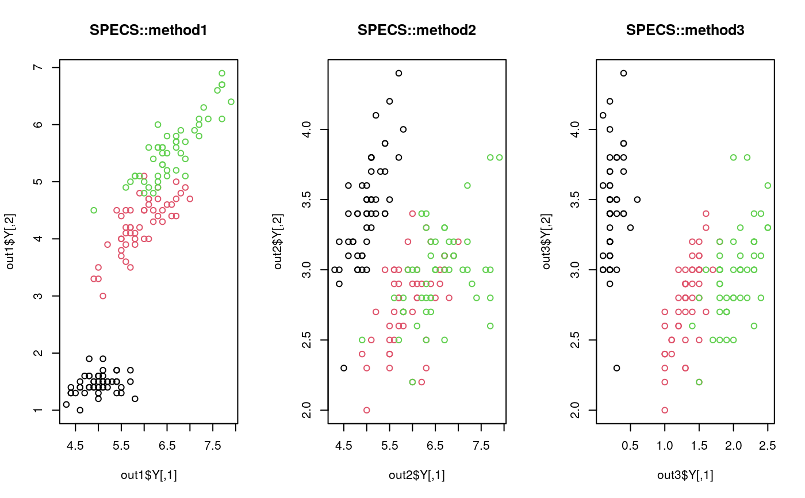

SPEC algorithm selects features from the data via spectral graph approach. Three types of ranking methods that appeared in the paper are available where the graph laplacian is built via class label information.
do.specs( X, label, ndim = 2, ranking = c("method1", "method2", "method3"), preprocess = c("null", "center", "scale", "cscale", "whiten", "decorrelate") )
| X | an \((n\times p)\) matrix or data frame whose rows are observations and columns represent independent variables. |
|---|---|
| label | a length-\(n\) vector of class labels. |
| ndim | an integer-valued target dimension. |
| ranking | types of feature scoring method. See the paper in the reference for more details. |
| preprocess | an additional option for preprocessing the data. Default is "null". See also |
a named list containing
an \((n\times ndim)\) matrix whose rows are embedded observations.
a length-\(p\) vector of spectral feature scores.
a length-\(ndim\) vector of indices with highest scores.
a list containing information for out-of-sample prediction.
a \((p\times ndim)\) whose columns are basis for projection.
Zhao Z, Liu H (2007). “Spectral feature selection for supervised and unsupervised learning.” In Proceedings of the 24th international conference on Machine learning - ICML '07, 1151--1157.
# \donttest{ ## use iris data ## it is known that feature 3 and 4 are more important. data(iris) iris.dat = as.matrix(iris[,1:4]) iris.lab = as.factor(iris[,5]) ## try different ranking methods out1 = do.specs(iris.dat, iris.lab, ranking="method1") out2 = do.specs(iris.dat, iris.lab, ranking="method2") out3 = do.specs(iris.dat, iris.lab, ranking="method3") ## visualize opar <- par(no.readonly=TRUE) par(mfrow=c(1,3)) plot(out1$Y, col=iris.lab, main="SPECS::method1") plot(out2$Y, col=iris.lab, main="SPECS::method2") plot(out3$Y, col=iris.lab, main="SPECS::method3")